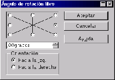

Next: Recortar
Up: Dibujar
Previous: Reflejos
Índice General
Es posible rotar la imagen completa mediante las opciones del menú [Modificar], submenú [Rodar],
que también se encuentran en la barra de herramientas Imagen. Para elegir el ángulo de giro hay
que usar la opción Ángulo libre de rotación para poder indicar el ángulo en el cuadro de diálogo
Ángulo de rotación libre. Hay que saber que el uso de esta herramienta origina que el tamaño de
la imagen aumente.
Figura 5.54:
Rotación
|

|
5.54
Proyecto Cursos - LuCAS - http://lucas.hispalinux.es/htmls/cursos.html